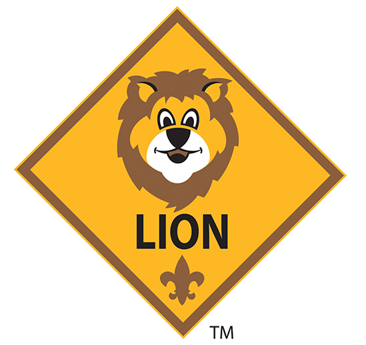
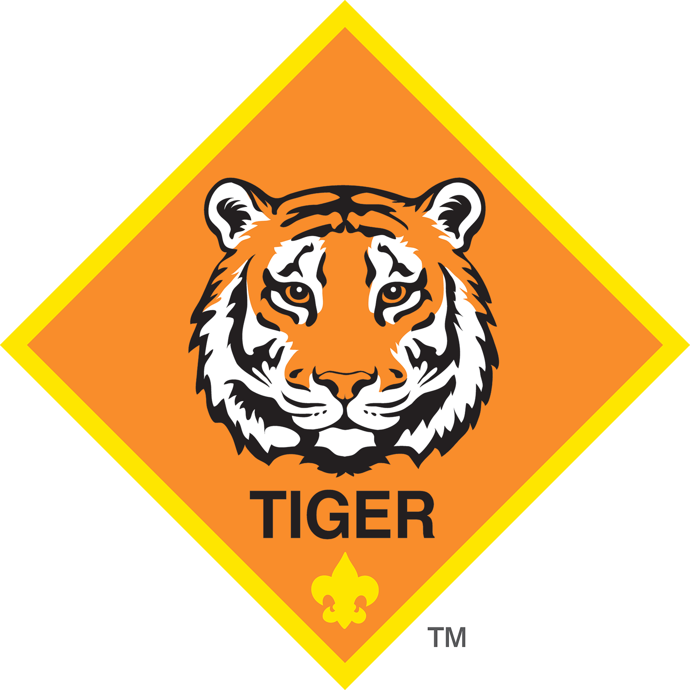
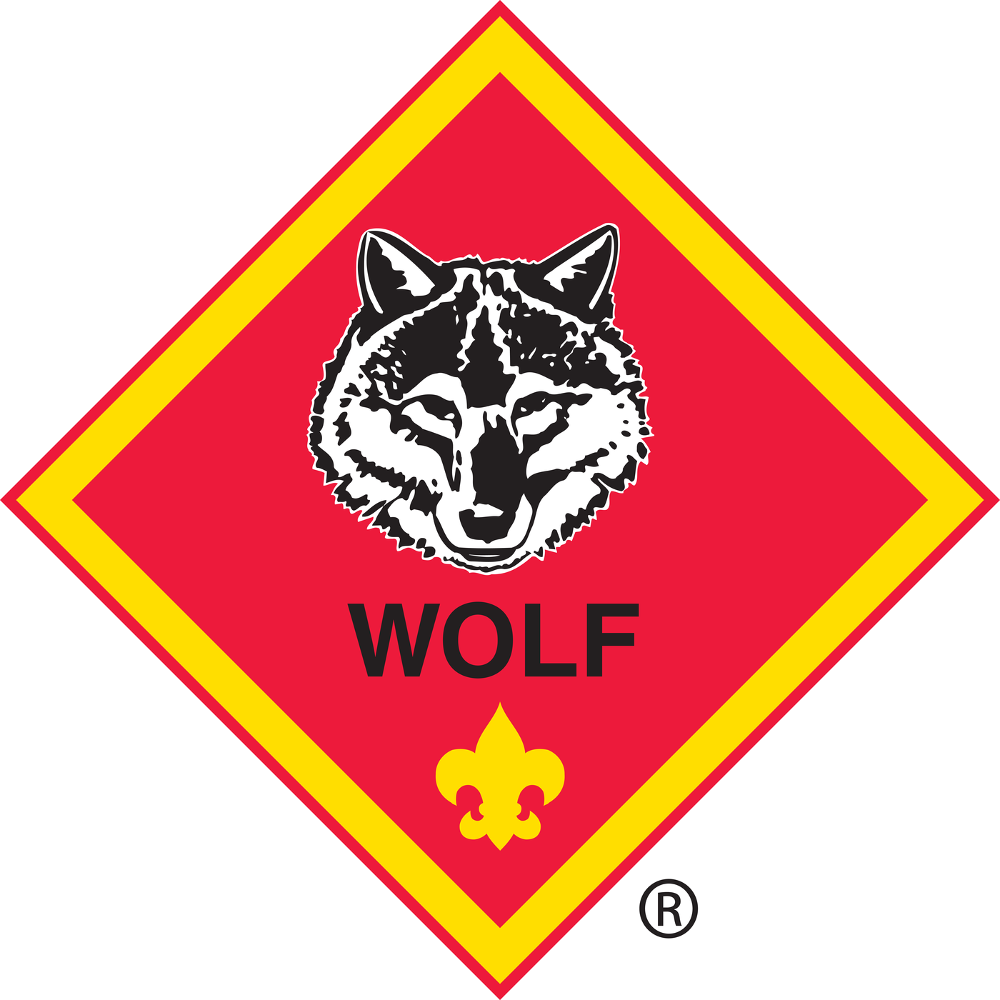
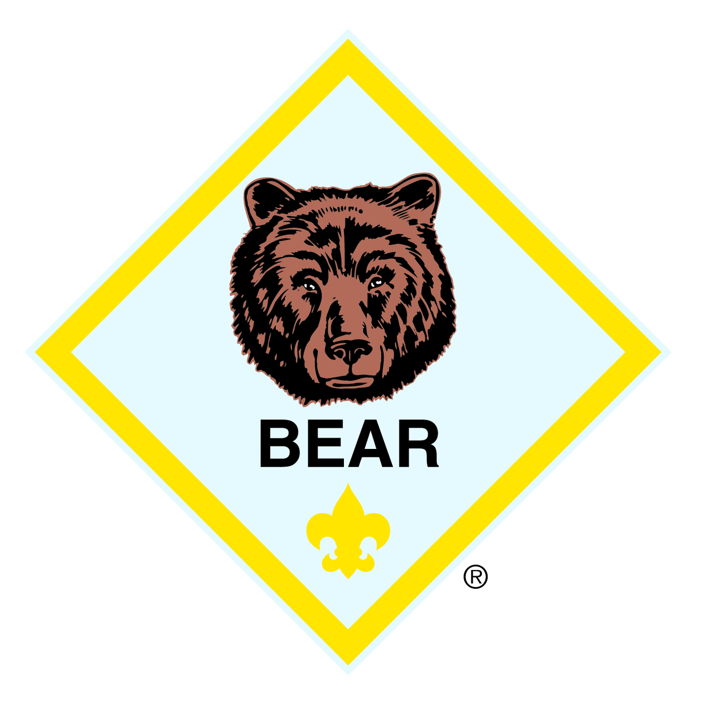
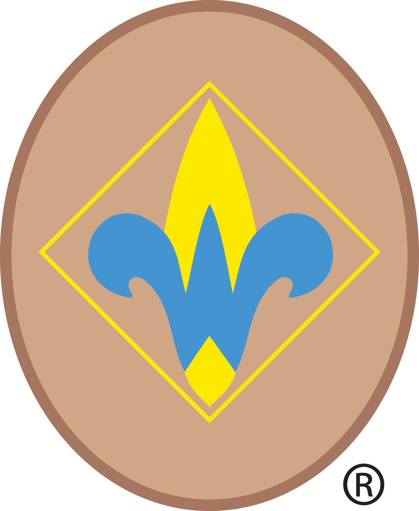
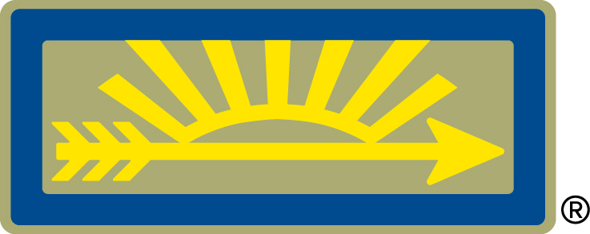

Cub Scouts is a year-round family program for boys and girls in kindergarten through 5th grade. Scouts belong to a small Den with kids in the same grade, and all Dens come together as Pack 776 for Pack meetings, campouts, and special events.
Scouts work toward a rank based on their grade. Each rank has its own adventures and badge.

Kindergarten
A fun introduction to Scouting with simple adventures and lots of family involvement.

1st Grade
Scouts begin exploring the outdoors, helping others, and trying new things with a parent or adult partner.

2nd Grade
Outdoor skills, community awareness, and growing independence through required and elective adventures.

3rd Grade
More challenging adventures that build responsibility, outdoor knowledge, and leadership.

4th Grade
Preparation for Scouts BSA with more advanced outdoor skills and leadership opportunities.

5th Grade
The highest rank in Cub Scouting. Completing this prepares Scouts to bridge into a Scouts BSA Troop.
Scouts wear the official Cub Scout uniform (blue for younger ranks, tan for Webelos/Arrow of Light). The uniform helps build a sense of belonging and is worn for Pack Meetings, special events, and when representing the Pack.
Cub Scouting is a family program. Parents and guardians are encouraged to participate in meetings, campouts, and service projects. Your involvement makes the experience richer for your Scout and helps the Pack thrive. We welcome everyone's help no matter skills or experience! This is a team effort!